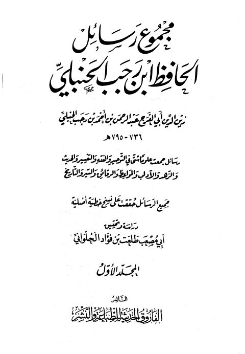

Downloads need an internet connection.
مجموع رسائل الحافظ ابن رجب الحنبلي
Authors: ابن رجب الحنبلي
Editors: أبو مصعب طلعت بن فؤاد الحلواني
Publishers: الفاروق الحديثة للطباعة والنشر
**▫️ العنوان: مجموع رسائل الحافظ ابن رجب الحنبلي** ▪️ المؤلف: #زين_الدين_أبو_الفرج_الحنبلي ▫️ المحقق: #أبو_مصعب_طلعت_بن_فؤاد_الحلواني ▪️ الناشر: #الفاروق_الحديثة ▫️ تاريخ النشر: 1424هـ 2003م ▪️ بلد النشر: القاهرة، #مصر ▫️ الطبعة: 2 ▪️ عدد الأجزاء: 4 ▫️ الصفحات: 1840 ▪️ نوع الوعاء: #كتاب ▫️ التصنيف الرئيسي: #العلماء_والمفكرون ۪